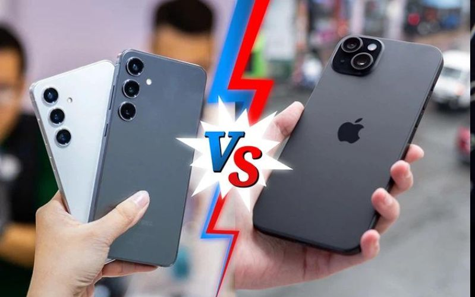
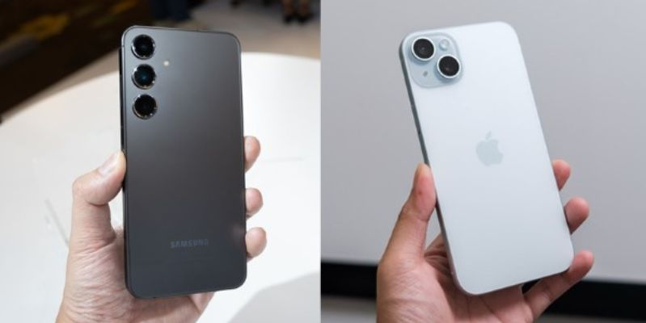
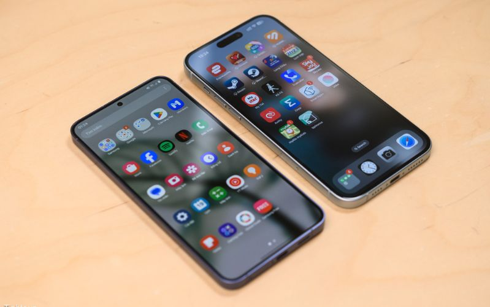
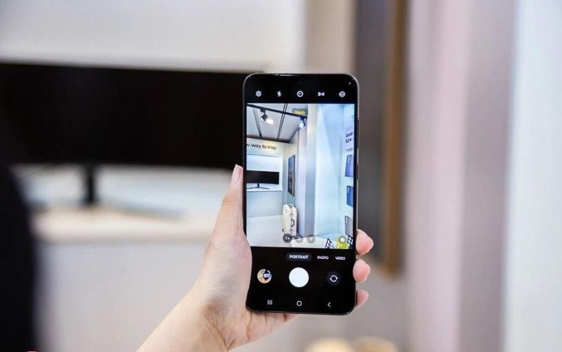
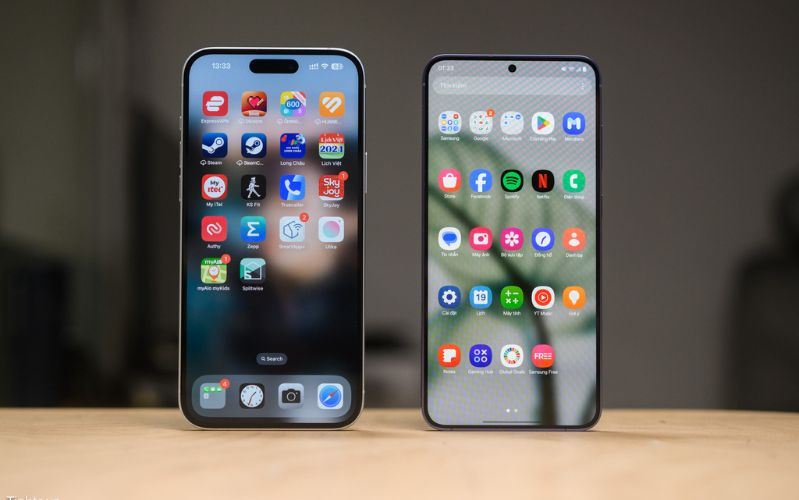
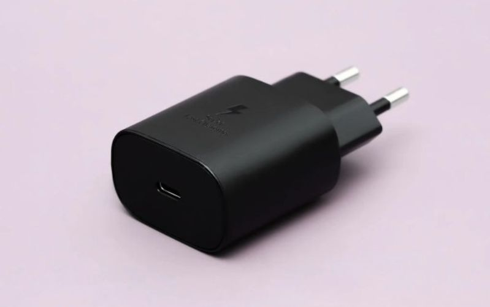
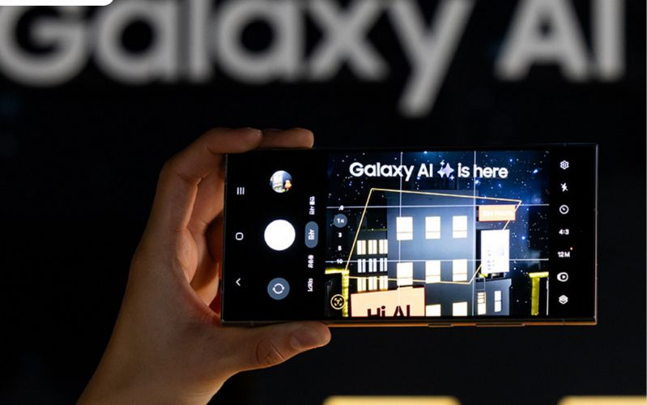
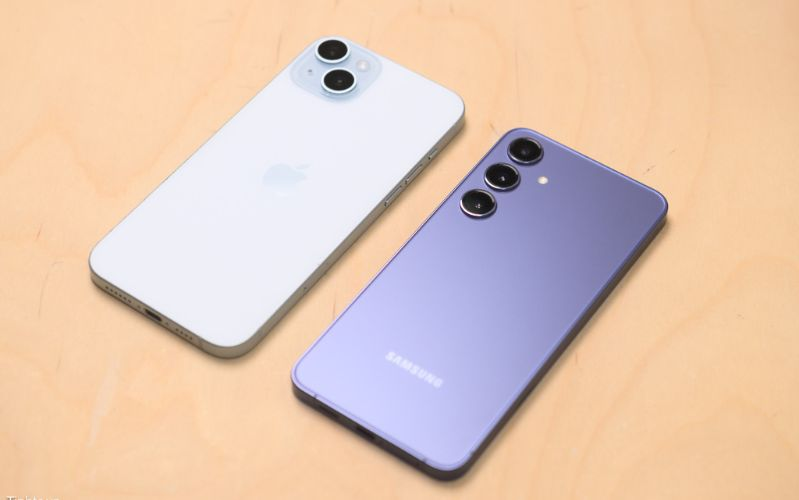

Galaxy S24 Plus vs. iPhone 15 Plus: AI trên dòng nào đỉnh hơn?
Galaxy S24 Plus và iPhone 15 Plus đều sở hữu diện mạo sang trọng, tích hợp vô số tính năng độc đáo. Bạn đang phân vân không biết đâu mới là sự lựa chọn tốt nhất dành cho mình? Hãy theo dõi ngay những đánh giá cụ thể về hai sản phẩm qua bài viết sau nhé!
So sánh Galaxy S24 Plus vs. iPhone 15 Plus
Thông số kỹ thuật
| Galaxy S24 Plus | iPhone 15 Plus | |
|---|---|---|
| Màn hình chính | 6.7 inch, Dynamic AMOLED 2X, 1-120Hz, 2600 nits | 6.7 inch, Super Retina XDR, 60Hz, 2000 nits |
| Bộ xử lý | Samsung Exynos 2400 | Apple A16 Bionic (4nm) |
| RAM | 12GB | 6GB |
| Bộ nhớ trong | 256GB/512GB | 128GB/256GB/512GB |
| Dung lượng pin | 4900mAh | 4383mAh |
| Camera sau | 50MP (chính) + 12MP (siêu rộng) + 10MP (tele 3x) | 48MP (chính) + 12MP (siêu rộng) |
| Camera trước | 12MP | 12MP |
Galaxy S24 Plus và iPhone 15 Plus: Thiết kế nào ấn tượng hơn?
Galaxy S24 Plus và iPhone 15 Plus đều là những thiết bị gây ấn tượng với rất nhiều người dùng bởi ngoại hình phẳng bo cong vô cùng tinh tế và hoàn thiện cùng mặt lưng kính bóng bẩy. Ngoài ra, chúng cũng sở hữu những điểm đặc trưng về ngôn ngữ thiết kế của cả hai thương hiệu nổi tiếng hàng đầu hiện nay là Samsung và Apple.
Cụ thể, Galaxy S24 Plus được trang bị hệ thống camera ba ống kính được bố trí theo chiều dọc được xếp riêng lẻ. Trong khi đó, cụm camera kép của chiếc iPhone 15 Plus lại được đặt chéo và nằm trong một thiết kế với mô-đun hình vuông.
Galaxy S24 Plus còn có vẻ ngoài mỏng, gọn với độ dày 7.7mm và trọng lượng 196g. Trong khi đó, iPhone 15 Plus sở hữu độ dày 7.8mm, cùng trọng lượng 201g. Do đó, các trải nghiệm cầm nắm trên chiếc điện thoại Samsung sẽ có phần nhẹ nhàng và dễ chịu hơn, điều này sẽ đặc biệt đáng quan tâm nếu như bạn là một người thường xuyên bận rộn di chuyển.
Cả Galaxy S24 Plus và iPhone 15 Plus đều mang đến cho người dùng các tùy chọn phiên bản màu sắc sang trọng và ấn tượng. Cụ thể, Galaxy S24 Plus sẽ có 4 màu Tím, Vàng, Xám, Đen và iPhone 15 Plus có 5 màu là Hồng, Xanh Dương, Xanh Lá, Vàng, Đen. Chúng đều rất sang trọng và phù hợp với xu hướng lựa chọn màu của phần đông người tiêu dùng trong năm 2024.
Galaxy S24 Plus chiếm ưu thế với độ sáng màn hình vượt trội
Galaxy S24 Plus được trang bị màn hình hiển thị Dynamic AMOLED, 6.7inch với độ phân giải 1440 x 3120px. Trong khi đó, iPhone 15 Plus sử dụng màn hình OLED 6.7inch, 1290 x 2796px. Chính vì vậy mà hình ảnh hiển thị trên chiếc điện thoại Galaxy S24 Plus sẽ sắc nét hơn iPhone 15 Plus.
Mặt khác, Galaxy S24 Plus cũng dễ dàng ghi điểm nhờ sở hữu tần số quét lên đến 120Hz và độ sáng màn hình là MAX 2600 nits. Trong khi đó, iPhone 15 Plus chỉ sở hữu tần số quét ở mức 60Hz và độ sáng MAX 2000nits. Điều này đồng nghĩa với việc trải nghiệm chạm lướt cũng như khả năng hiển thị trong các điều kiện ánh sáng ngoài trời của sản phẩm điện thoại Samsung sẽ có phần chiếm ưu thế tốt hơn.
Galaxy S24 Plus nổi trội với camera cảm biến 50MP
iPhone 15 Plus sở hữu hệ thống camera kép với cảm biến chính với độ phân giải 48MP và cảm biến góc siêu rộng độ phân giải 12MP. Trong khi đó, Galaxy S24 Plus được trang bị hệ thống camera 3 ống kính với cảm biến chính là 50MP, cảm biến góc siêu rộng 12MP và cảm biến tele 10MP. Chính vì vậy mà ảnh chụp zoom từ xa của S24 Plus sẽ có chất lượng tốt hơn.
Bên cạnh đó, Samsung cũng tích hợp cho chiếc S24 Plus mới với các tính năng AI hiện đại giúp cho quá trình chụp ảnh cũng như chỉnh sửa trở nên chuyên nghiệp hơn bao giờ hết. Đối với iPhone 15 Plus, Apple tập trung cải tiến vào khả năng chụp ảnh chân dung và chế độ chụp ban đêm để bức ảnh trở nên sống động hơn.
Đồng thời, cả hai sản phẩm này đều được trang bị hệ thống camera trước 12MP cho phép người dùng có thể chụp ảnh tự sướng và thực hiện cuộc gọi video mọi lúc mọi nơi với nội dung chất lượng cao.
Galaxy S24 Plus và iPhone 15 Plus được trang bị hiệu năng mạnh mẽ
Cả hai chiếc điện thoại Galaxy S24 Plus và iPhone 15 Plus đều được cung cấp sức mạnh từ những bộ vi xử lý hàng đầu phân khúc. Cụ thể, chiếc Galaxy S24 Plus được trang bị con chip Exynos 2400 phiên bản dành riêng cho dòng Galaxy và iPhone 15 Plus được tích hợp con chip Apple A16 Bionic. Do đó, cả hai chiếc điện thoại này đều đáp ứng tốt các trải nghiệm đa nhiệm tác vụ cũng như chơi game đồ họa yêu cầu ở mức cao của người dùng.
Tuy nhiên, Galaxy S24 Plus có mức dung lượng bộ nhớ vượt trội hơn so với chiếc iPhone 15 Plus. Cụ thể, phiên bản kế nhiệm của Galaxy S23 Plus có mức dung lượng RAM 12GB và hai tùy chọn bộ nhớ lưu trữ ROM là 256GB và 512GB. Trong khi đó, iPhone 15 Plus được trang bị RAM 6GB cho 3 tùy chọn bộ nhớ lần lượt là ROM là 128GB, 256GB và 512GB.
Galaxy S24 Plus sở hữu dung lượng pin ấn tượng
iPhone 15 Plus chỉ sở hữu dung lượng pin ở mức 4383mAh. Mức dụng lượng này thấp hơn so với S24 Plus khi chiếc điện thoại Samsung sở hữu dung lượng lên đến 4900mAh. Ngoài ra, "đứa con" của Samsung còn được trang bị công nghệ sạc nhanh với công suất 45W trong khi hỗ trợ sạc của iPhone 15 Plus chỉ dừng lại ở con số 20W. Do đó, thời lượng trải nghiệm trên Galaxy S24 Plus sẽ được duy trì lâu dài hơn so với chiếc điện thoại iPhone 15 Plus.
Hỗ trợ công nghệ AI
Nhà sản xuất Hàn Quốc đã trang bị công nghệ AI cho Galaxy S24 Plus nói riêng và các phiên bản tùy chọn khác của Galaxy S24 Series nói chung. Theo đó, các tính năng mà người dùng không thể bỏ lỡ đó là Khoanh vùng tìm kiếm, Phiên dịch trực tiếp, Trình duyệt thông minh và các trợ lý quyền năng…
Nhờ được tích hợp hàng loạt tính năng AI, S24 Plus có thể giúp cho người dùng kết nối dễ dàng với bạn bè nước ngoài cũng như nâng cao hiệu suất công việc và dễ dàng truy dấu những thông tin cần thiết một cách nhanh chóng.
Samsung Galaxy S24 Plus và iPhone 15 Plus: Nên lựa chọn sản phẩm nào?
Thật khó để có thể chọn ra sản phẩm nào nổi bật hơn giữa hai điện thoại này vì mỗi thiết bị đều có ưu, nhược điểm riêng. Nếu như Galaxy S24 Plus gây ấn tượng với kiểu dáng đẹp mắt, màn hình mượt mà, tích hợp công nghệ AI tiên tiến, thì iPhone 15 Plus lại ghi điểm với Dynamic Island, thiết kế bền bỉ, hiệu năng mạnh mẽ và khả năng chụp ảnh chân dung chuyên nghiệp. Điều này cũng khó có thể trả lời cho câu hỏi nên mua iPhone cũ hay Android mới.
Bạn có thể sắm ngay Samsung Galaxy S24 Plus hoặc iPhone 15 Plus tại 24hStore - Hệ thống chuyên cung cấp những sản phẩm công nghệ chính hãng với mức giá phải chăng. Ngoài ra, bạn có thể liên hệ trước qua hotline 1900.0351, đội ngũ tư vấn viên sẽ hỗ trợ giải đáp mọi thắc mắc từ bạn một cách tận tình và nhanh chóng.